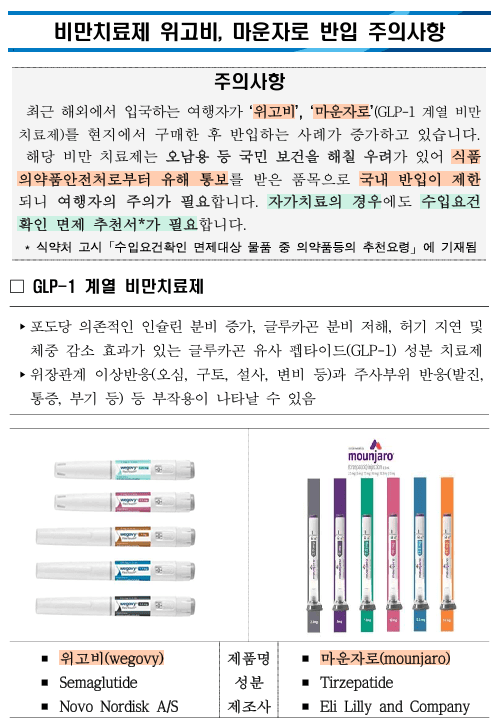
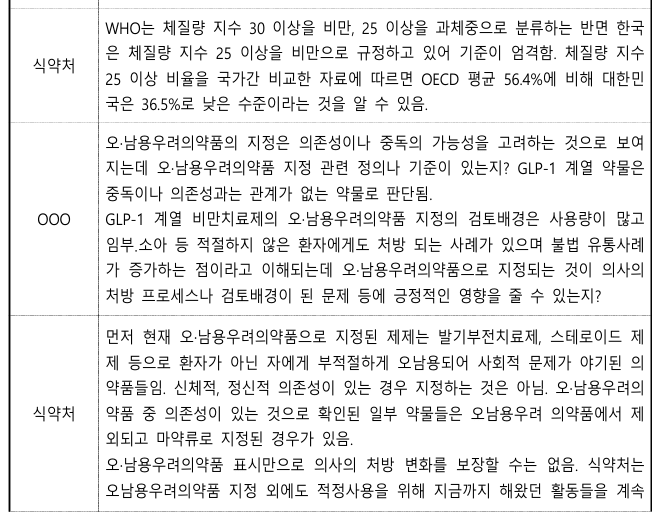

8월부터 식약처 6번, 관세청 2번, 산업부 1번, 건보공단 1번
총 10건 (중복포함 12건) 넣었고 전부 답 옴
회의록, 규제영향분석서, 세관 공지 원문, 국가별 통계까지 다 받아서 까봄
결론부터 말함
1) 국내 병원에서 처방하는 마운자로·위고비, 관세청에선 '유해의약품'임
2) 근거는 2006년 관세청 고시 한 줄 + 식약처 시스템 등록. 공문 0장
3) 세관 공지에 적힌 차단 이유: "오남용 등 국민 보건을 해칠 우려"
근데 식약처가 위원회에 "이거 오남용 우려 약 맞냐"고 물어본 건 2026년 4월
세관 공지는 2025년 11월 → 판단하기 전에 막음. 그리고 지금도 공식 지정 안 됨 (규제심사 중)
4) 같은 '오남용 우려'인데
포장에 문구 넣는 지정: 위원회 표결, 20쪽 넘는 규제영향분석서, 행정예고, 3년마다 재검토
아예 못 들여오게 막는 차단: 전부 없음
5) 올해 1~9월 공항에서 막힌 1,349건 중 846건이 일본발
가짜약 근거로 든 건 인도발 분석인데, 그마저도 위조 감정은 3개뿐이고 관세청도 "인도발 전체 아님"이라고 함
가짜인지도 판별 못한 카레자로를 근거로 스시자로만 집중 마크 하는 중
6) 처방전 들고 와도 들여올 길 없음
추천서 받아오라는데, 추천서는 국내에서 안 파는 약만 내줌
1. 근거: 20년 된 빈칸 + 시스템 입력
관세청 답
- 관세법 제237조: 국민보건 해칠 우려 있으면 통관보류 가능
- 수입통관 사무처리 고시 별표11: 의약품 6병까진 자가사용 허용. 단, 식약처가 수입불허·유해 통보한 건 요건확인 받아야 함
- 이 문구 생긴 게 2006년 10월
식약처 통보 공문 번호 내놓으라 했더니
위고비·마운자로는 유해의약품 맞고, 식약처가 연계시스템으로 통보해서 통지서·통지문은 없다고 함
20년 전에 "식약처가 찍으면 막는다"는 빈칸 만들어놓고
식약처는 시스템으로 이름만 채워넣으면 됨
고시 개정 필요 없음 → 규제영향분석 필요 없음 → 행정예고 필요 없음 → 공문도 필요 없음
(8월 글에서 근거가 무역 고시(통합공고)라고 썼던 건 틀렸음. 산업부 왈 통합공고는 각 부처 요건 모아놓은 '플랫폼'이고 3개 성분 관련된 건 아무것도 없음)
2. 세관 공지 원문 까봄
인천공항세관 2025년 11월 공지 내용
- 위고비·마운자로는 오남용 등 국민 보건을 해칠 우려가 있어 식약처로부터 유해 통보 받은 품목
- 국내 반입 제한
- 자가치료여도 수입요건확인 면제 추천서 필요
공지 아래에 정품 사진이랑 제조사 박혀 있음
Novo Nordisk A/S, Eli Lilly and Company

가짜약 얘기는 공지에 한 줄도 없음
세관이 직접 쓴 차단 이유는 '오남용'
(이 공지는 본청 지시 없이 세관이 자체로 만든 거라고 함)
3. 순서가 거꾸로임
2006.10 관세청 고시에 "유해 통보 품목은 요건확인" 문구 들어감
2025.11 (늦어도 이때) 세관 공지: '오남용 우려'로 유해 통보, 반입 제한
2026.04.08 중앙약사심의위원회: 오남용 우려 의약품 지정 '타당성' 자문. 9명 전원 찬성
2026.05.28 규제영향분석서 작성
2026.06.05~26 행정예고
2026.11 지금: 규제심사 중. 아직 지정 안 됨
오남용 우려 있는지 위원회가 판단하기 최소 5개월 전부터 이미 '오남용 우려'로 막고 있었음
그리고 그 판단은 아직도 공식 확정이 안 됨
즉, 아무 근거도 없이 계속 압수만 하는 중이라는 소리
4. 같은 '오남용'인데 대접이 다름
[오남용 우려 의약품 지정]
하는 일: 포장에 '오·남용우려의약품' 문구 + 의약분업 예외지역 약국(전국 300곳 내외)에서 처방전 없이 못 팔게 함
거친 절차: 중앙약심 회의 + 표결, 20쪽 넘는 규제영향분석서, 행정예고, 비용검증, 법제처 사전검토, 규제심사
비용 계산까지 함: 표시자재 교체비 2,400만원
재검토: 3년마다
[해외 반입 차단]
하는 일: 처방전 있어도 전량 유치·반송·폐기
거친 절차: 없음
회의록 0, 위해평가 0, 규제영향분석 0, 행정예고 0, 공문 0
재검토: 없음
포장 문구 넣는 데도 위원회 표결하고 비용까지 계산함
사람이 들고 온 약 전량 유치하는 데는 아무것도 안 함
웃긴 건 이 규제영향분석서 '추진 경과'에 해외직구 차단이 들어가 있음
차단 자체는 분석 대상도 아닌데 경과엔 적어놓음
8월 글에 "실제 조치가 포장지에 문구 넣기"라고 썼었음
지정됐다고 쓴 건 틀렸는데(아직 심사 중), 내용은 거의 맞았음
5. 식약처가 회의에서 한 말
회의록에 이런 식약처 발언들 있음
- GLP-1 비만치료제는 비급여라 조제현황 확인 못함
- 비급여라 정부가 처방을 관리할 장치 없음
- 오남용우려의약품 표시만으로 의사 처방이 바뀐다고 보장 못함
참고로 위원 중엔 GLP-1은 중독·의존성이랑 관계없는 약이라는 의견도 있었음

그리고 규제영향분석서에서 오남용 사례로 든 것들
- 국내에서 아동·임산부한테 처방된 사례
- 국내 병원 고용량 처방 후 나눠 맞기 안내
- 국내 온라인 과장광고·불법유통
- 국내 DUR 소아·임부 점검 건수 증가
전부 국내 병원, 국내 유통 얘기임
해외에서 정식 처방받아 온 환자가 문제라는 사례는 없음
정리하면
국내 처방: 정부가 관리할 장치 없음 (식약처 발언)
해외 처방: 전량 유치
국내 수입사가 들여온 건 2025년 1조 709억원어치 (전년 대비 6.3배, 규제영향분석서)
개인이 일본 병원에서 처방받아 들고 오면 유해의약품
6. 국가별 통계: 누굴 막았나
공항에서 들고 오다 막힌 거 (여행자 휴대품)
2025년 134건 중 일본 110건
2026년 1~9월 1,349건 중 일본 846건, 중국 300, 베트남 78, 미국 58, 태국 11
인도는 국가 목록에 이름도 없음 (기타 56건에 섞여 있다 쳤도 최대 56건)
우편으로 들어오다 막힌 거 (국제우편)
2025년 1,046건 중 인도 780건, 일본 258건
2026년 1~9월 4,143건 중 인도 3,867건
위조약 분석은 인도발만 했음
인도발은 거의 다 우편 직구 쪽
공항에서 사람이 들고 온 건 일본발이 제일 많음
그 일본발은 검사한 자료가 없음
검사는 인도발로 하고, 막는 건 일본 다녀온 사람까지
7. 근데 인도발 '짝통'도 흔들림 (내 정보공개글 + 주딱 정보공개글)
주딱 글 참조 : 관세청 얘내들 인도발 가짜 마운자로라는것도 입만열면 거짓말이여 - 마운자로 마이너 갤러리
9월 17일 보도자료
중앙관세분석소가 유효성분 함량·불순물 분석했고, 해당 제품들은 이후 상표권자 감정 거쳐 위조품으로 확인됐다고 함
언론에선 9개 전부 위조품이라고 나감
근데
내가 받은 분석소 답: 인도발만 분석했고, 함량 초과·불순물은 '일부' 제품
주딱이 이의신청해서 받은 답(부분인용):
- 상표권 대리인한테 진위 확인 맡긴 건 2026년 2월 26일에 산 제품 3개
- 이건 인도발 전체 제품에 대한 조사 결과가 아님
언론에 나간 건 9개 전부 위조품
실제 위조 감정은 2월에 산 3개
분석한 제품이랑 감정한 제품이 같은 건지, 나머지는 감정을 했는지 설명 없음
(분석 장면 영상은 8월 말에 찍은 걸로 보인다는 분석도 있음. 주딱 글 참고)
그리고 인도엔 릴리 정품 마운자로가 정식으로 팔림
릴리 인도 법인이 2025년 3월에 출시했고, 2025년 8월부터 펜 전 용량을 처방전 기반으로 전국 판매 중
인도발 = 짝통이 아님. 관세청도 인도발 전체 얼마나 되는지는 모른다는 뜻임
정리하면
가짜약 근거: 인도발 '일부' + 위조 감정 3개
막는 범위: 일본 처방품 포함 전부
8. 통계 없다며
8월 관세청: 의약품은 성분별로 적발 관리 안 함. 부존재
9월 브리핑: 2024년 4건, 2025년 1,189건, 2026년 8월까지 5,030건
11월 회신: 경로별·국가별로 쭉 줌. 전산시스템에 있다고 함
민원인한텐 없고 기자한텐 있는 통계
덤으로 숫자도 기관마다 다름
식약처 규제영향분석서: 2025년 국제우편 등 882건 적발·통관보류
관세청 회신: 2025년 1,189건 (국제우편만 1,046건)
집계 기준이 다를 수는 있는데, 같은 해 같은 약 숫자가 기관마다 다름
9. 처방전? 추천서? 둘 다 소용없음
관세청: 처방전 소지자 따로 처리하는 지침 없음. 법령대로
여행자는 전량 유치 → 다음 출국 때 반송 가능 → 기간 지나면 전량 폐기
세관 공지: 자가치료면 면제 추천서 받아와
식약처: 추천서는 국내 유통 안 되는 약만. 구입 동의서에 "국내 미허가 약이고 동일 성분 대체약 없음" 확인하는 내용 있음
마운자로: 국내에서 팜
국내에서 팔아서 안전한 약인데
국내에서 팔아서 못 들고 옴
참고로 공항에서 막혔으면 '압수' 아니고 '유치'임
다음 출국 때 반송 요청하면 다시 들고 나갈 수 있다고 함
기간 넘기면 폐기니까 해당 세관에 빨리 문의 (기간 며칠인지는 회신에 없음)
10. 기관별 한 줄
식약처: 차단 검토 자료 없음. 추천서는 시도·센터 일. 회의에선 국내 처방 관리 장치 없다고 함
관세청: 식약처가 시스템에 올린 대로 막음. 공문 없음. 통계는 없다가 생김. 위조 감정은 3개
산업부: 우린 플랫폼임
건보공단: 협상 경과 비공개
희귀필수센터: 공개 대상 아님 (식약처 피셜. 근데 약사법 제91조로 세운 공공법인임)
아무도 자기가 정했다고 안 함
총평
9월에 "악의가 아니라 그냥 없음"이라고 썼음
이제 왜 없는지 앎
없어도 되게 만들어놨기 때문임
'오남용 우려'라는 말 하나로
국내에선 위원회 열고 분석서 쓰고 행정예고 하고 3년마다 재검토하는데
해외 처방 환자는 그 판단 나오기도 전부터 시스템 등록 한 번으로 막혀 있음
가짜약 막는 거 반대 안 함
근데 공항에서 막힌 사람 절반 넘게는 일본발이고
그 일본발은 검사한 자료도 없고
가짜약 근거라던 인도발도 위조 감정은 3개고, 관세청도 인도발 전체 아니라고 함
세관 공지에 적힌 이유는 가짜약이 아니라 오남용이고
그 오남용 판단은 아직 확정도 안 됨
지금 대한민국에서 마운자로가 유해의약품인 근거
공문 0장
회의록 0장
위해평가 0장
시스템 등록뿐
오남용 지정 행정예고 의견은 규제심사 끝나면 공개된다니 나오면 또 올림
이런 병신같은 짓거리 한놈들 이름이나 알아낼려고 승인자 누군지 정보공개 청구 중인데 그건 여기에 까기는 어려울것 같고
만약 이름까도 되는 고위 공직자 이름 나오면 공개는 변호사랑 상담 후 생각좀 해봄
정보공개청구는 아무나 할 수 있으니까 계속해라
그러다 문제 삼을 수 있는거 보이면 문제 삼으면 된다.